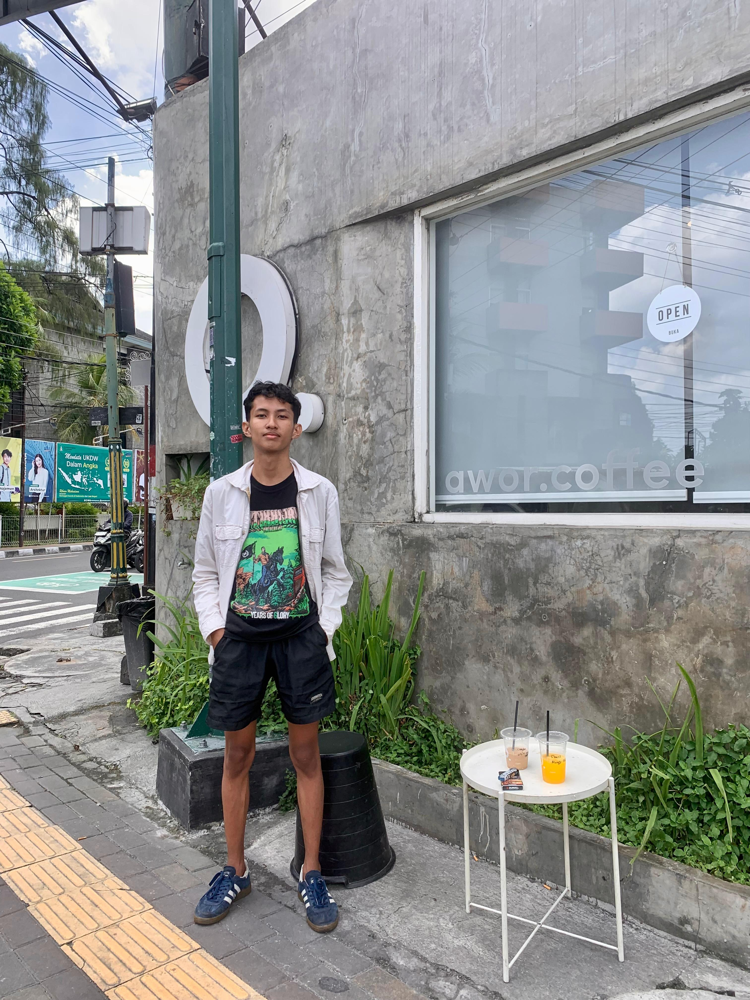
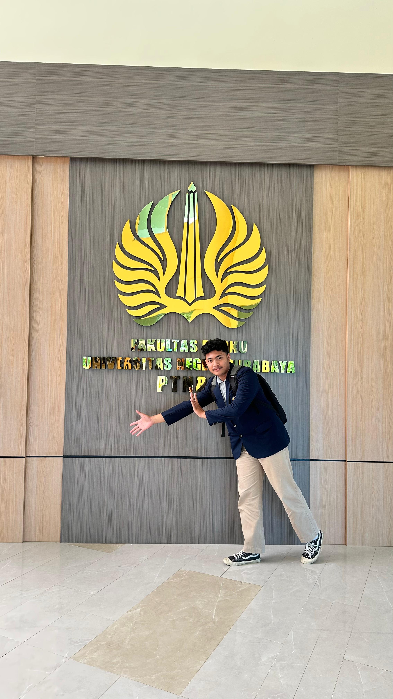
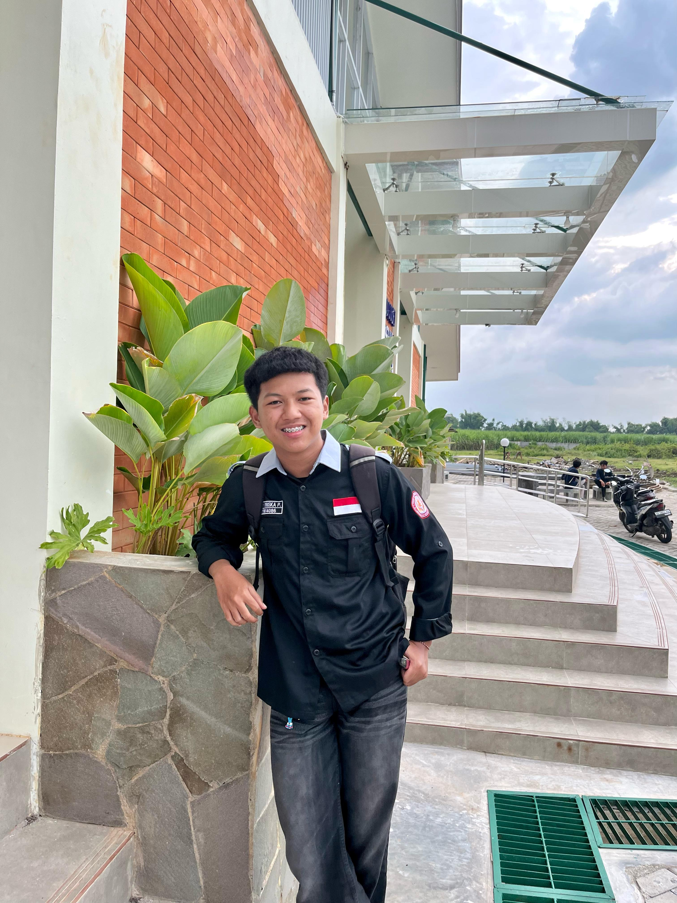
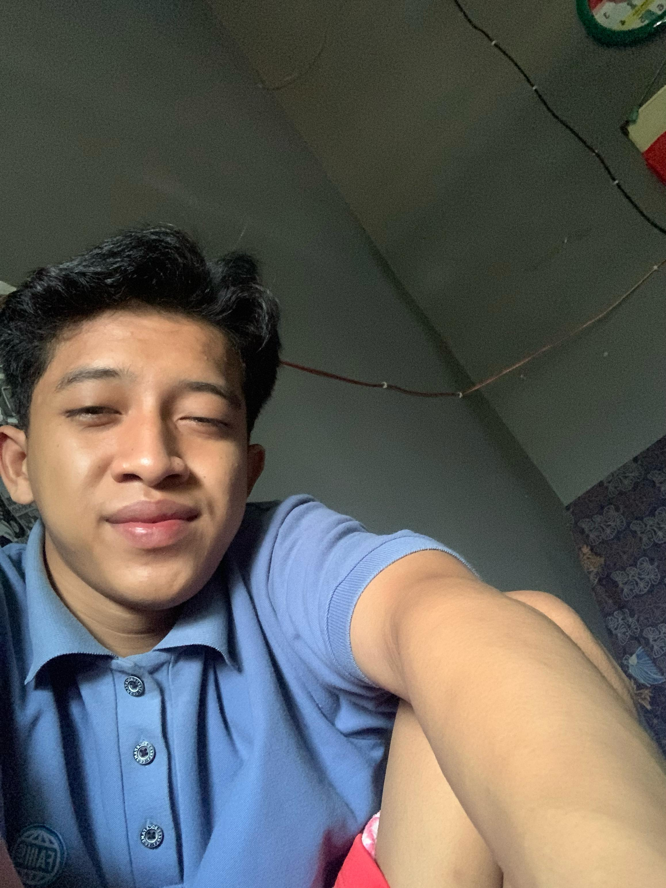
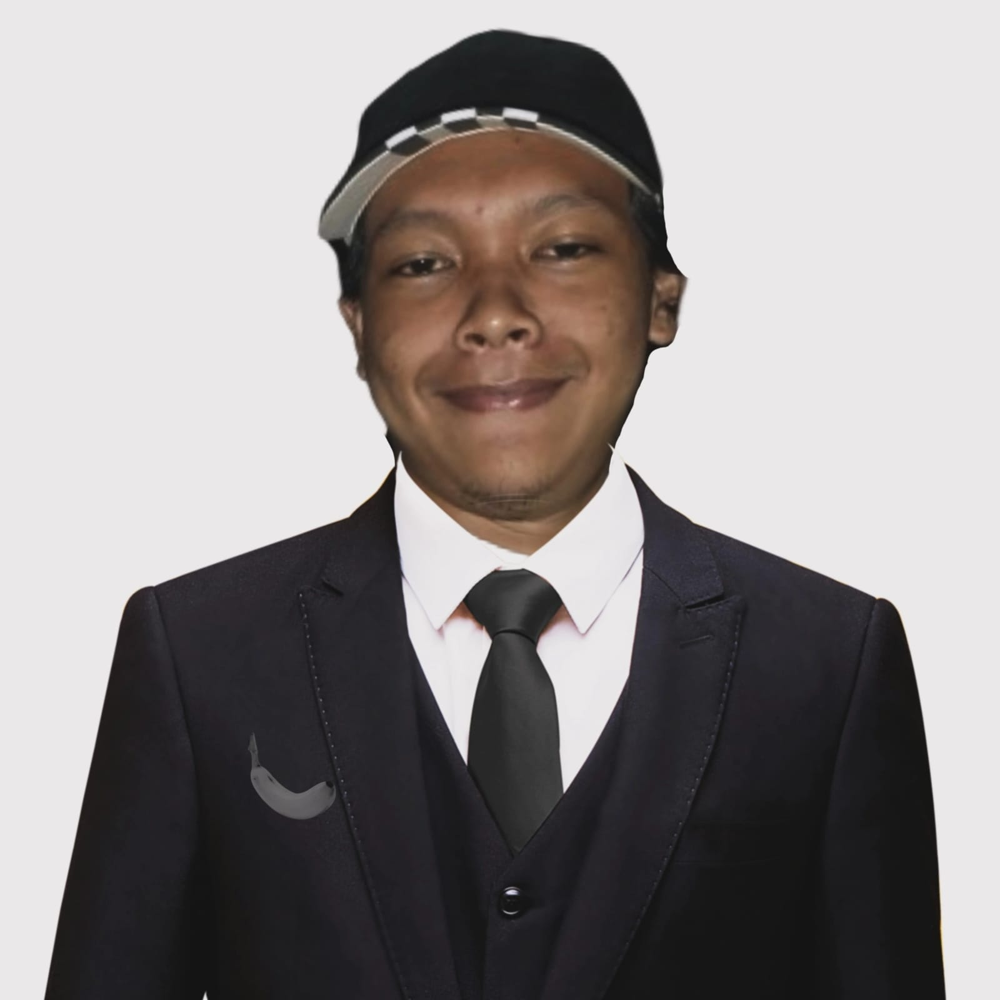

Tentang Website Ini
Website ini dibuat sebagai media pembelajaran interaktif dengan tema "Membangun Keluarga Harmonis Melalui Pernikahan". Di dalamnya terdapat materi, tips, cerita nyata, dan pantun yang bertujuan untuk memperkuat pemahaman dan membangun keluarga yang harmonis melalui pernikahan.
Anggota Kelompok

Bagus Chandra Priyatna
24111814129

Oktavio Dwi Prasetyo
24111814085

Wendy Friska Prastya
24111814086

Fandy Ahmad Febrian
24111814131

Tabligh Akbar
24111814134